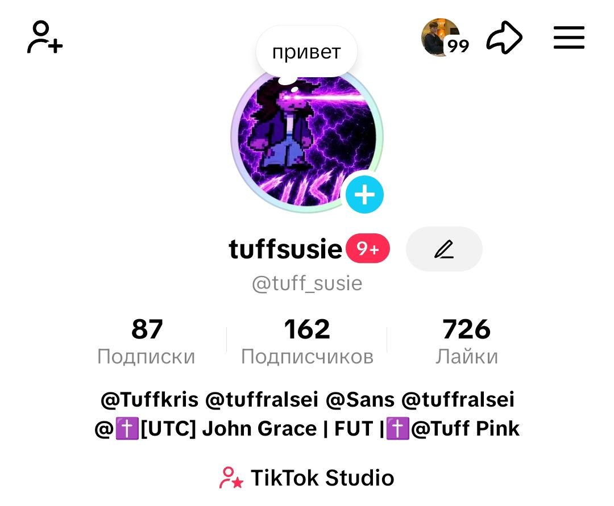

РАСПИСАНИЕ СОБЫТИЙ
Admin Abuse
До предполагаемого начала Admin Abuse по МСК:
Считаю время…
Обычно событие проходит по субботам около 19:00 МСК — примерно за час до обновления.
Это ориентир, а не точное расписание: разработчики могут изменить время или пропустить событие.
Открыть Fisch в Roblox ↗СПАСИБО
Спасибо, что вы со мной!

Вас уже больше 150 — спасибо вам!